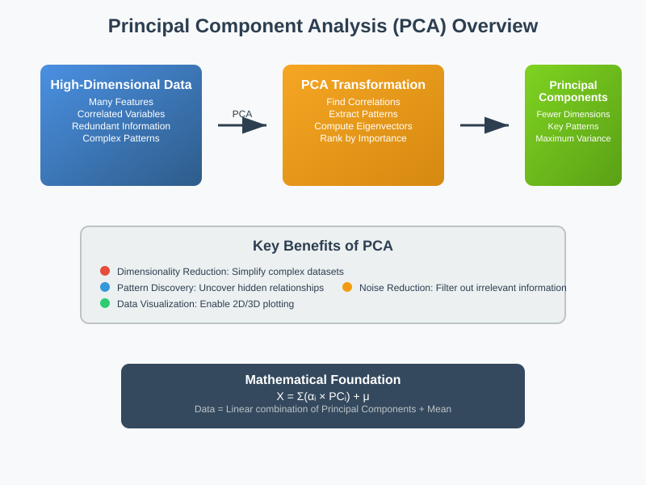
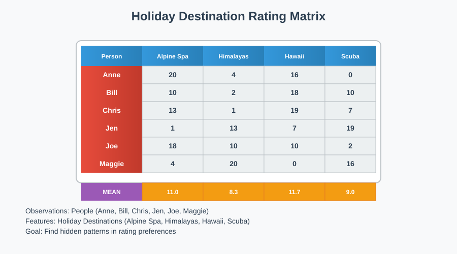
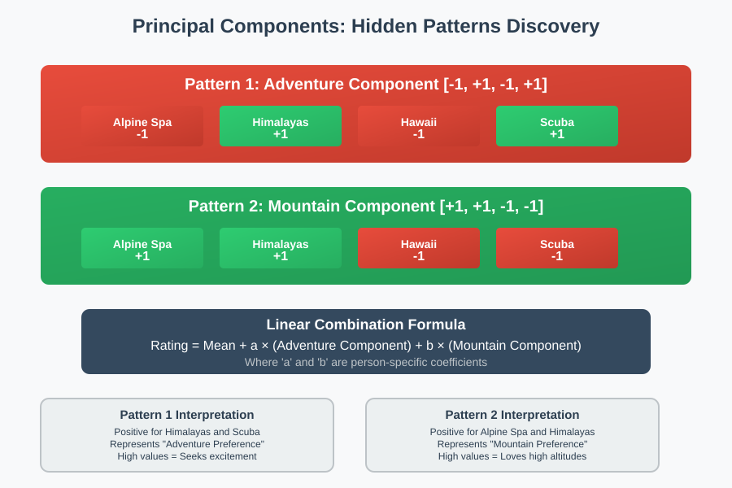
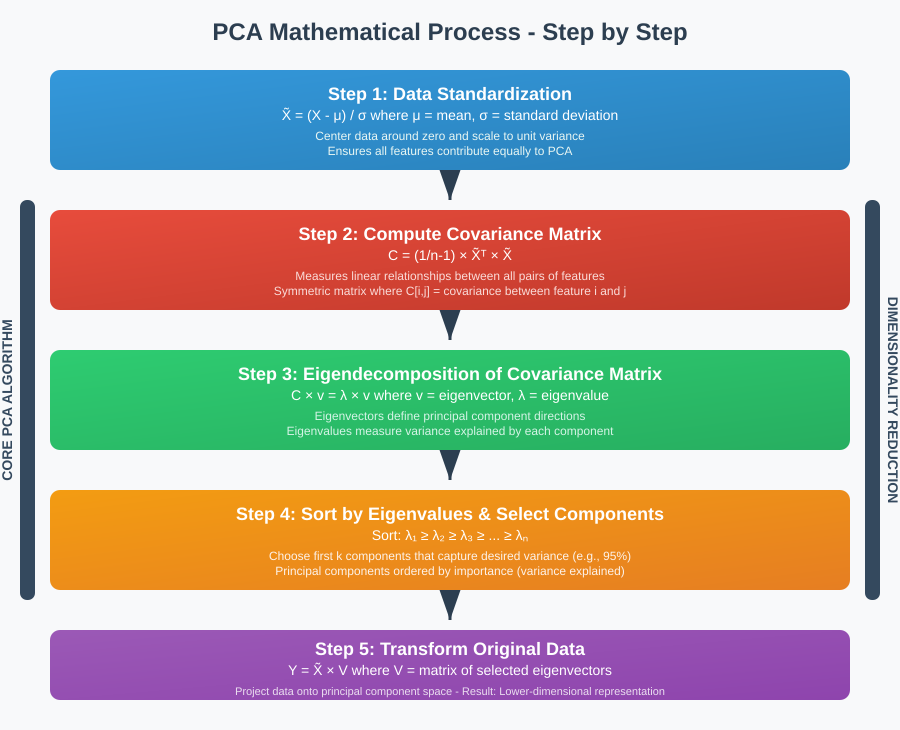
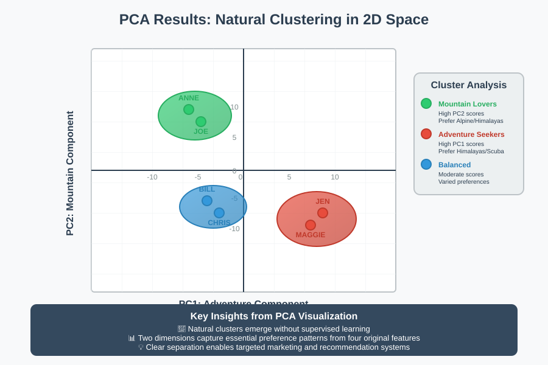

Principal Component Analysis (PCA) - Dimensionality Reduction


📋 Quick Navigation
- 🎯 Introduction to PCA
- 🏖️ Holiday Destination Example
- 📊 Mathematical Foundation
- 🔍 Principal Components Extraction
- 📈 Visualization and Clustering
- 🌟 Real-World Applications
- 📚 References & Further Reading
🎯 Introduction to PCA
In Machine Learning, we are constantly seeking to uncover major patterns within datasets. Principal Component Analysis (PCA) stands as one of the most powerful techniques for this purpose, particularly when dealing with high-dimensional data.

Why Do We Need PCA?
Consider scenarios where you encounter:
- Large number of variables (measurements) in your dataset
- Correlated variables that capture similar patterns
- Redundant information across multiple features
- High covariance between variables
PCA addresses these challenges by:
- Identifying correlations between variables
- Extracting major patterns from the data
- Reducing dimensionality without significant information loss
- Enabling data visualization in lower dimensions
What is Dimensionality Reduction?
Dimensionality Reduction is the process of reducing the number of variables needed to gain insights from data while preserving essential information. PCA achieves this by transforming the original variables into a new set of uncorrelated variables called principal components.
🏖️ Holiday Destination Example
Let's explore PCA through a concrete example involving holiday destination preferences.

The Dataset
We have ratings from 6 people for 4 different holiday destinations:
| Person | Alpine Spa | Himalayas | Hawaii | Scuba |
|---|---|---|---|---|
| Anne | 20 | 4 | 16 | 0 |
| Bill | 10 | 2 | 18 | 10 |
| Chris | 13 | 1 | 19 | 7 |
| Jen | 1 | 13 | 7 | 19 |
| Joe | 18 | 10 | 10 | 2 |
| Maggie | 4 | 20 | 0 | 16 |
Initial Observations
From this matrix, we can observe preferences:
- Anne likes spas in the Alps
- Bill prefers Hawaii
- Maggie loves Himalayas
- Jen enjoys Scuba diving
Here, people (Anne, Bill, Chris...) are the observations, while holiday destinations represent our features.
📊 Mathematical Foundation
Finding Hidden Patterns
The key question is: Can we represent each person as a combination of underlying patterns?

Discovering Principal Components
Through PCA analysis, we identify two distinct patterns:
Pattern 1 (Adventure Component): [-1, +1, -1, +1]
- Positive values for Himalayas and Scuba diving
- Represents the amount of adventure preference
Pattern 2 (Mountain Component): [+1, +1, -1, -1]
- Positive values for Alpine Spa and Himalayas
- Represents preference for mountains
Mean Calculations
First, we calculate mean ratings for each destination:
- Alpine Spa: (20 + 10 + 13 + 1 + 18 + 4) ÷ 6 = 11.0
- Hawaii: (16 + 18 + 19 + 7 + 10 + 0) ÷ 6 = 11.7
- Himalayas: (4 + 2 + 1 + 13 + 10 + 20) ÷ 6 = 8.3
- Scuba: (0 + 10 + 7 + 19 + 2 + 16) ÷ 6 = 9.0
Reconstructing Individual Ratings
For any person, we can express their ratings as:
Rating = Mean + a × (Adventure Component) + b × (Mountain Component)
Example: Anne's ratings
Alpine Spa: 20 = 11.0 + a×(-1) + b×(+1)
Hawaii: 16 = 11.7 + a×(-1) + b×(-1)
Himalayas: 4 = 8.3 + a×(+1) + b×(+1)
Scuba: 0 = 9.0 + a×(+1) + b×(-1)
Solving this system of equations yields: a = -6.7 and b = +2.4
This means Anne has:
- Low adventure preference (negative coefficient)
- High mountain preference (positive coefficient)
🔍 Principal Components Extraction
The PCA Process

Principal components are ordered by importance, determined by eigenvalues and eigenvectors. The importance ranking helps us understand which patterns explain the most variance in our data.
Key Mathematical Concepts
Eigenvalues: Measure the amount of variance explained by each principal component
Eigenvectors: Define the direction of each principal component in the original feature space
Variance Explained: The proportion of total data variance captured by each component
Dimensionality Reduction Achievement
Through PCA, we successfully:
- Reduced dimensions from 4 features to 2 components
- Preserved essential information about preferences
- Enabled pattern interpretation (adventure vs. mountain preference)
- Maintained data relationships between individuals
📈 Visualization and Clustering
2D Visualization Results

When we plot individuals using their principal component scores, natural clusters emerge:
Cluster Analysis
Mountain Lovers Cluster: - Anne and Joe - High positive scores on Mountain component - Prefer Alpine environments
Adventure Seekers Cluster:
- Jen and Maggie
- High positive scores on Adventure component
- Enjoy active, exciting destinations
Balanced Preferences: - Bill and Chris - Moderate scores on both components - Enjoy variety in destinations
PCA Applications Summary
PCA serves two primary purposes:
- Dimension Reduction: Simplify data without losing critical information
- Pattern Visualization: Reveal hidden structures and natural groupings
🌟 Real-World Applications
🎭 Computer Vision: Eigenfaces

Problem: Facial recognition with high-dimensional image data
Solution: PCA transforms face images into "eigenfaces" - ghostly representations that capture facial variations
Process: 1. Convert face images to pixel vectors 2. Apply PCA to find principal components (eigenfaces) 3. Represent any face as linear combination of eigenfaces 4. Achieve significant compression while preserving recognition capability
🧬 Genetics: Population Analysis
Research Question: Can we determine geographic origin from DNA?
Study Design: - Dataset: 1,400 Europeans with genetic variations - Features: ~200,000 genetic markers per person - PCA Application: Reduced to 2 principal components
Results: - Clear geographic clustering emerged - Principal genetic variations strongly correlated with geography - Demonstrated population migration patterns through DNA
📊 Applications Comparison
| Domain | Original Dimensions | Reduced Dimensions | Key Insight |
|---|---|---|---|
| Facial Recognition | 10,000+ pixels | 50-100 eigenfaces | Face identity preservation |
| Genetics | 200,000 markers | 2 components | Geography-genetics correlation |
| Holiday Preferences | 4 destinations | 2 components | Adventure vs. Mountain preference |
📚 References & Further Reading
📖 Core Resources
- Jolliffe, I.T. (2002). Principal Component Analysis - Comprehensive mathematical treatment
- Turk, M. & Pentland, A. (1991). Eigenfaces for Recognition - Seminal paper on eigenfaces
- Novembre, J. et al. (2008). Genes mirror geography within Europe - Genetics PCA study
- Scikit-learn PCA Documentation - Implementation guide
🛠️ Practical Implementation
- Hands-On Machine Learning (Géron) - Chapter 8: Dimensionality Reduction
- Pattern Recognition and Machine Learning (Bishop) - Chapter 12: PCA Theory
- The Elements of Statistical Learning - Advanced mathematical foundations
- PCA Tutorial with Python Examples - Practical coding guide
🔗 Interactive Resources
This documentation provides a comprehensive introduction to Principal Component Analysis, from basic concepts to advanced applications. For hands-on practice, explore the provided Colab notebook and experiment with the techniques on your own datasets.